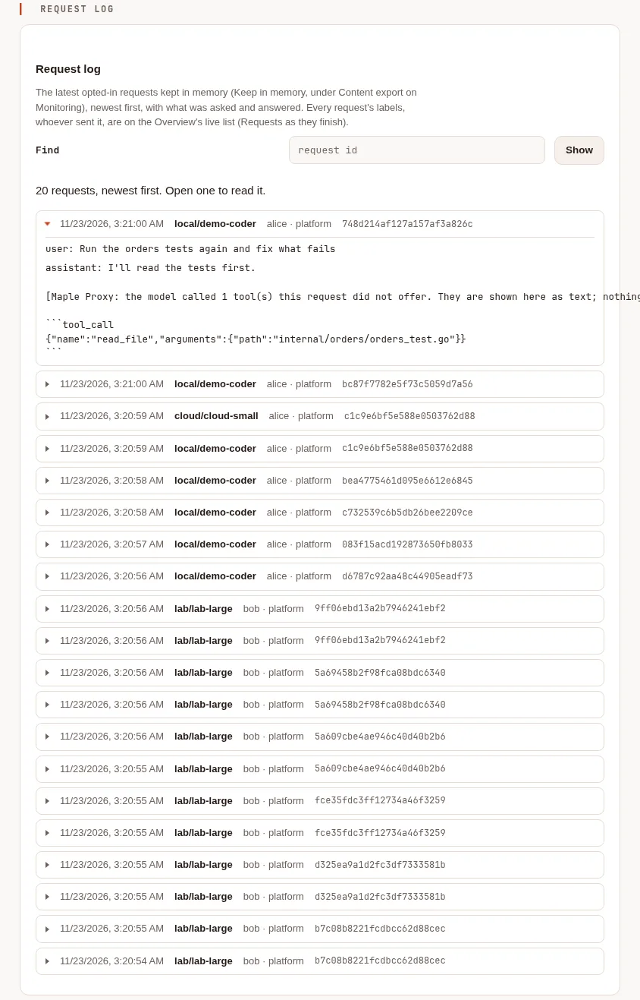
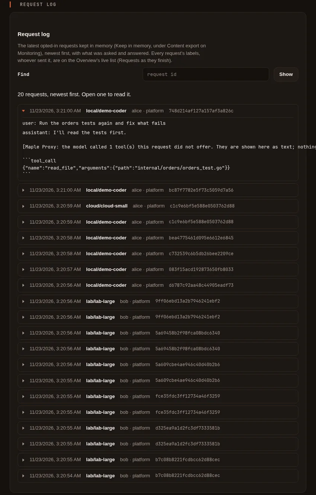
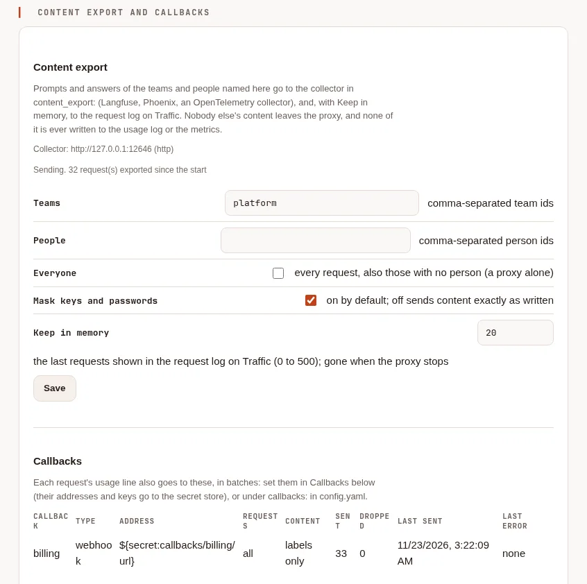
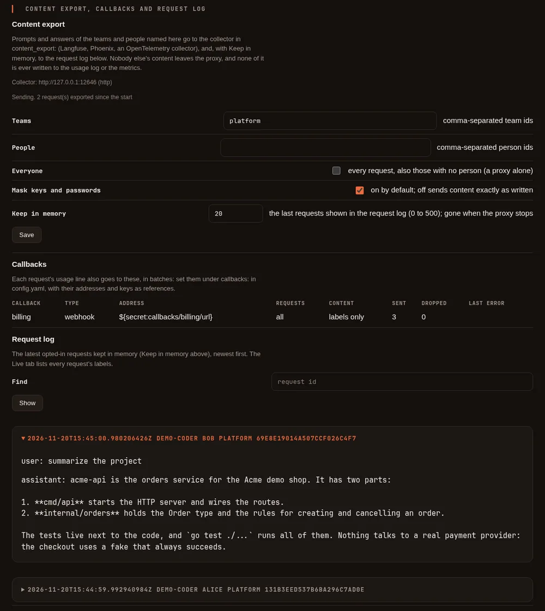
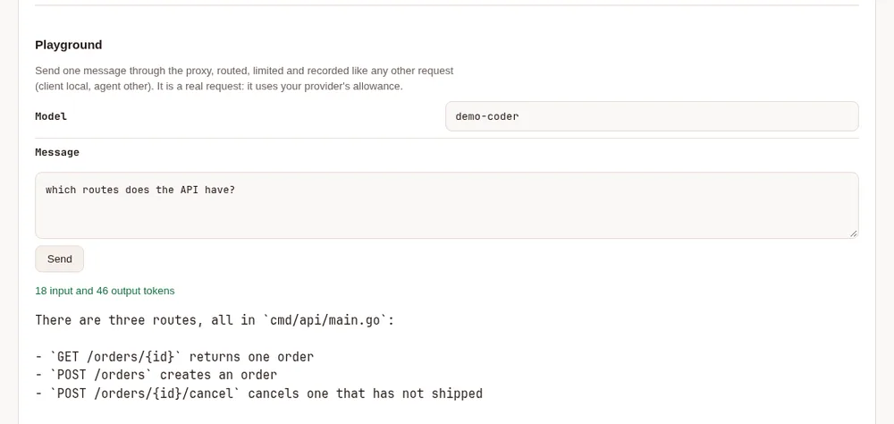
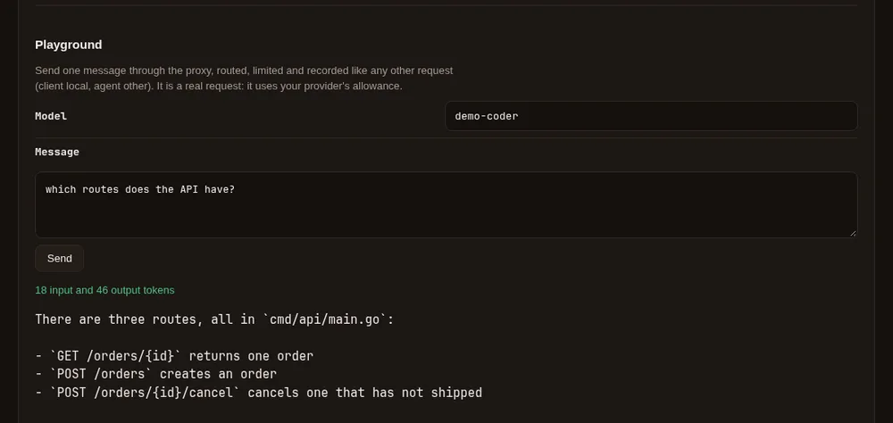

Cost & usageWatch it7 min read
Content export and callbacks #
On this page
The usage log and the metrics never hold what people wrote. Some teams want that, for debugging prompts or for an evaluation tool such as Langfuse or Phoenix. This page is about the two ways to send requests elsewhere: content export, which sends the prompts and answers of the people and teams you name, and callbacks, which send every request's usage line (labels and counts) to a webhook, Langfuse, Datadog or object storage. Both are off until you set them.
In plain words #
- What it is. Content export copies the prompts and answers of the teams and people you choose to a tool you run or subscribe to. Callbacks copy each request's usage line, the same one the usage log keeps, to other places.
- Why you want it. To see why an agent went wrong, to score answers in an evaluation tool, or to keep usage in your own billing system or bucket.
- What stays the same. Nobody else's prompts or answers leave the proxy. The usage log, the metrics and the
OpenTelemetry spans of
otel:still never hold content. A proxy on one machine with nothing set behaves as before. - What to do. Set the collector or add callbacks on the setup page's Monitoring page (folds Content collector
and Callbacks, which need a page password; a header or key typed there is kept in the secret store and never
shown again) or in
config.yaml, then choose who is covered on the card Content export and callbacks. The request log is on Traffic. - Try a model from the page. The same card's playground sends one message through the proxy and shows the answer. It is a real request, counted like any other.
Content export #
content_export:
endpoint: https://collector.example:4318 # an OpenTelemetry collector (OTLP over http or grpc)
protocol: http
headers:
authorization: ${secret:otel/content-authorization}
teams: [research] # whose requests are exported
people: [ada]
everyone: off # on: every request, also those with no person (a proxy alone)
redact: on # the default: keys, tokens, passwords and private keys are masked first
max_chars: 16000 # each part of a message is cut to this many characters
keep_local: 0 # requests kept in the proxy's memory for the request log (up to 500)Store a header's value with maple-proxy secrets set otel/content-authorization; the file holds only the
reference.
- Who is covered. A request is exported when its person is in
people, its team is inteams, oreveryoneis on. A request with no person or team (a proxy alone, without people) is exported only witheveryone: on. - What is sent. One span per request, following the OpenTelemetry GenAI conventions: the messages
(
gen_ai.input.messages), the answer (gen_ai.output.messages), the system prompt (gen_ai.system_instructions) and the tool names and descriptions, with the same labels as the metadata spans (model, provider, tokens, outcome, person and team). The same messages are also ininput.valueandoutput.value, which Phoenix and Langfuse read. Tool calls and their results are included; images and other attachments are named, never copied. - What is masked. With
redact: on, anything shaped like an API key, a bearer token, a password, a private key or a password in an address is replaced with[redacted]before it leaves. It is pattern matching: it catches common shapes, not every secret (see the warning below). Each part is then cut tomax_chars, and a very long conversation keeps its latest messages: one request's content is at most about 256 KB, and the earlier messages of a longer conversation are left out. - Where it goes. To its own collector, never to the one in
otel:, so content cannot reach your metadata collector by mistake. Plainhttp://to another machine is refused unlessinsecure_http: on. - Langfuse and Phoenix. Both take OTLP over HTTP: point
endpointat their OTLP address with the authorization header they ask for.
Content export sends what people wrote
Name only the teams and people who know their prompts and answers are exported, and send them only to a collector you trust with them. Masking catches common shapes of secrets, not every one: add masking guardrails for personal data you must keep out.
The request log #
With keep_local above 0, the latest covered requests are also kept in the proxy's memory, and the Request
log on the Traffic page shows them with their content, newest first, and can find one by its request id. Each request is one
line: when it was answered (in your browser's time), the account and model, the person and team, and its request id as
the usage log writes it; open a line to read what was asked and answered. They are gone when the proxy stops, and the
setup page shows them only on this machine, never on the single sign-on address. An empty log says why: nothing kept
yet, or Keep in memory at 0.




The playground #
The same card ends with a Playground: choose a model name (the box offers your model groups, aliases and models, and takes any other name you type) and write a message, select Send, and see the answer with its input and output tokens. Use it to check that a model answers, or what a guardrail does with a message.


It is a real request, not a simulation. It goes through the proxy like any other: routed, held to budgets and
guardrails, written to the usage log (client local, agent other) and exported when content export covers it,
and it uses your provider's allowance. One message, no conversation; the answer is at most 512 tokens. The page
sends at most one playground request every two seconds, and an answer that takes over two minutes is given up.
Callbacks #
Each finished request's usage line also goes to every callback, in batches (100 lines, or every 10 seconds, by
default). The line is exactly the one the usage log writes. A callback with content: on (webhook and Langfuse only)
also gets the content of the requests content export covers, as a separate item naming its line.
callbacks:
- id: billing
type: webhook # a JSON POST, signed
url: ${secret:callbacks/billing/url}
secret_ref: ${secret:callbacks/billing/signing}
events: all # all, success or failure
- id: lf
type: langfuse
url: https://cloud.langfuse.com
key_id: pk-lf-... # the public key
secret_ref: ${secret:callbacks/lf/secret}
content: on
- id: dd
type: datadog # the logs intake; url defaults to the US1 site
secret_ref: ${secret:callbacks/dd/api_key}
- id: archive
type: s3 # S3, or GCS's interoperability endpoint, MinIO, R2
url: https://s3.eu-west-1.amazonaws.com
bucket: maple-usage
region: eu-west-1
prefix: usage/
key_id: ${secret:callbacks/archive/key_id}
secret_ref: ${secret:callbacks/archive/secret}
- id: blob
type: azure_blob # a container's SAS address
url: ${secret:callbacks/blob/url}
prefix: usage/Set each secret with maple-proxy secrets set callbacks/<id>/<name>, or point a reference at an environment
variable whose name starts with MAPLE_CALLBACK_. A webhook's address and an Azure SAS address are credentials
themselves, so they must be references.
| Type | What arrives |
|---|---|
webhook | POST of {"version":1,"items":[...]}; each item is {"type":"usage","id":...,"line":{...}} or, with content: on, {"type":"content","id":...,"content":{...}}. With secret_ref, X-Maple-Timestamp and X-Maple-Signature: v1=<hex HMAC-SHA256 of timestamp + "." + body>, as alert webhooks sign |
langfuse | Langfuse's ingestion API: a trace and a generation per line (model, tokens, timing, person as the user, session, tags, an error level for failures); with content: on, the generation's input and output |
datadog | Datadog's logs intake, one log per line with its fields as attributes, ddsource: maple-proxy |
s3 | One JSON Lines object per batch, prefix/YYYY/MM/DD/<time>-<id>.jsonl, signed with SigV4 |
azure_blob | The same objects, as block blobs in the SAS address's container |
- Delivery. A batch that fails is tried twice more, then dropped and counted; the card shows what was sent, dropped and the last error. A slow receiver never slows a request: each callback has a bounded queue, and lines past it are dropped and counted.
- Addresses.
https://only, unlessallow_privateandallow_http_loopbackallow plain http to this machine. Every address a name resolves to is checked: link-local and cloud metadata addresses are never reached, this machine and private networks only withallow_private. No proxy from the environment, no redirect followed. - Several replicas. Each replica sends the lines it wrote.
Technical details #
- Content goes through one port, handed the request as it was sent to the provider and what came back, after the usage line is written; it is asked first whether that person or team is covered, so nothing is prepared for anyone else. Streams are gathered as they pass (text, reasoning and tool calls, at most 4 MB) and handed over when they end.
- Spans of the content export share their trace with the metadata spans of
otel:(both derive it from the request id), so a collector that receives both can join them. - Content is prepared away from the request, on a queue of its own: a request never waits for it. When that queue is full the content of the request is not exported, and the card counts it. The request log keeps at most 32 MB, and each callback holds at most 32 MB of content waiting to be sent.
- Answers from the response cache, and the proxy's own cache-warming requests, are not exported.
- A callback's line id is derived from the request id, its time, provider, model and attempt, the same for the line and for its content.
- Changes to either block apply without a restart: from the card, on a settings reload, or when another replica's settings arrive. A callback is rebuilt only when its settings or the values its references point to changed.
Related #
- Metrics and telemetry export Prometheus and OpenTelemetry, from what the proxy already knows.
- Proxy settings: Content export Every content export and callback key.
- Teams People, teams, access tokens, budgets and rate limits on one proxy.
- See and filter your usage The usage log on your own disk: filters, views and Grafana.